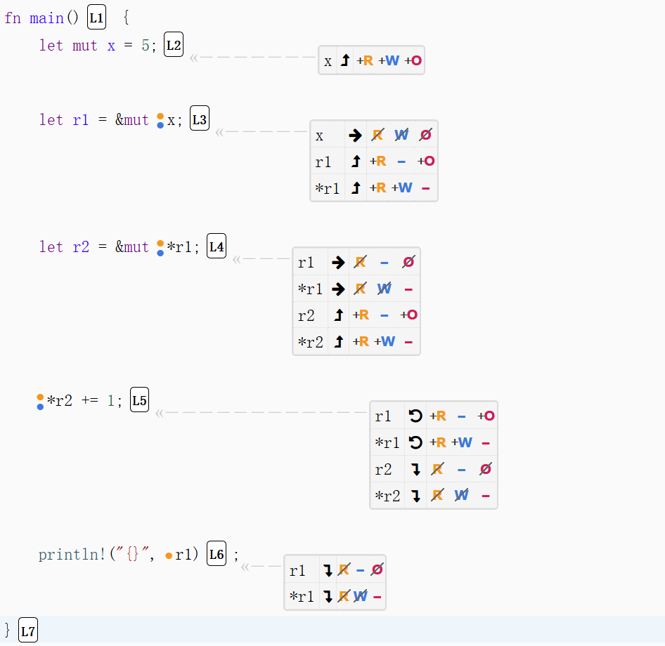

再借用（Reborrow）：Rust 借用检查的高级话题还是智力游戏？

如果大家完全消化吸收了上一篇文章 《你真得懂 Rust 借用检查吗？一文聊透 Borrow Checker 底层逻辑：权限模型》 ，那么恭喜你，掌握了一个强大的借用检查 分析工具 ，你甚至可能都没有意识到它到底有多强大，因为你可能还没拿它来分析过复杂的问题，那么今天，咱们就用它来试着解读一下：Reborrow（再借用），一个让很多 Rust 新手晕头转向的智力游戏。
1. 什么是“再借用”？
看下面一段代码：
1 | fn main() { |
以上是一段合法的代码，可以正常编译运行，输出 r1 的值是 6。这段代码里有一个行出现了很少见的一种书写形式：
1 | let r2 = &mut *r1; |
Rust 初学者通常会将这行代码理解为：先执行 *r1 ，对 r1 进行解引用，找到它指向的值，也就是 x ，然后借出 x 的可变引用给到 r2 。等一下，那 r1 呢？它也是 x 的一个可变引用呀？如果照这种解释，那 x 岂不是同时借出了两个可变引用吗？这是不合法的，但这段代码并没有报错，所以很明显，编译器并不是这么想的。
那编译器是怎么理解这行代码的呢？当 borrow checker 发现代码正在“对一个通过引用访问的地方再次创建引用时”，它不会把这个创建中的引用视为一个新的独立引用，而是会理解为：“从当前引用（也就是 r1 ) 派生出来的引用”，也就是说： r1 是 x 的借用，而 r2 则是 r1 的借用，从 x 的角度看， r2 是它的一个 Reborrow（再借用）。也就是说 x 、 r1 、 r2 三者的依赖关系更接近于这样一种关系：
1 | x |
而不是下面这种关系：
1 | x |
2. “再借用”是怎样发生的？
可能对于初学者来说，Rust 编译器对 let r2 = &mut *r1 的解释是有一点“不讲道理”，但 Rust 选择这样处理是有原因的，等后面我们了解了这背后的动机，就能慢慢习惯和接受这种表达方式了。但在此之前，咱们得好好理解一下这个再借用到底是怎么发生的？这就需要祭出我们的分析神器：权限模型了，以下是使用 Aquascope 生成的上述代码的权限标注，它能帮助我们看清很多问题：

在第 3 行时， x 因借出了不可变引用而暂时丢失了 R、W、O 属性， r1 因获得的是 x 的可变引用，因此，通过它就能改写 x ，所以 *r1 获得的是从 x 让渡出来的 R 和 W 权限。这是本行代码最重要的一个信息点。对于 r1 来说，它的权限都是关于它自己的，与它引用的值无关，由于 r1 前面没有 mut 修饰，所以它只有 R 权限，没有 W 权限（如果您对此部分的解读感到过于跳脱和无法理解，那你需要阅读 《你真得懂 Rust 借用检查吗？一文聊透 Borrow Checker 底层逻辑：权限模型》 一文）。
进行到第 4 行，当编译器发现：解引用 *r1 的前面是 &mut 时，它识别出：这是一个“再引用”场景，所以， *r1 所具有的权限将被 r2 借走，因为是 &mut 修饰，所以， *r1 将丢失 R 和 W 权限，并转移到 *r2 上，这一逻辑和一个普通的可变引用借用一个值是一样的，就像当初 r1 借走 x 的 R 和 W 权限，并通过 *r1 来展现是一样的。R 和 W 权限从 *r1 转移到 *r2 后， r1 就将面临一种极其尴尬的“处境”，我们在《》一文中解释过，引用和解引用的权限是一体的，它们合在一起表达的才是引用完整的语义，现在，R、W 权限从 *r1 转移到 *r2 后，就意味着：我们暂时不能再通过 r1 去读写 x 的值了，在这种情形下， r1 其实已经处于一种“不可用”的状态了，所以，有必要暂时移除它自己的 R 和 O 权限。
关于 *r1 、 *r2 之间权限关系和 r1 、 r2 之间的权限关系，我个人认为它们有区别的，R、W 权限从 *r1 到 *r2 确实是一种转移关系，因为它们代表着对值 x 的读写权限从一开始的 r1 （用 *r1 表示） 转移到了 r2 （用 *r2 表示） 身上。但 r1 、 r2 之间的权限关系并不存在转移之说，应该理解为： r1 丢失对其指向值的读写能力后，必须要在短期内 disable 自己，而不应理解为是它的 R、W 权限转移给了 r2 ，而 r2 作为新生引用，天然具有 R、W 权限是很自然的，并不是别处转移给它的。
在第 5 行，通过“活着的”[1] r2 改写了 x 值，它是有权限这么做的，因为现在 *r 是有 W 权限的。但是，此时的 r1 是完全不可用的，如果我们在第 5 行前面插入一行： *r1 += 1; ，编译器会报错：Cannot use *r1 because it was mutably borrowed，这个错误信息非常有说明性， *r1 被谁给 mutably borrowed 了呢？当然是 *r2 。这里不得不再啰嗦一句，如果你对 *r1 和 *r2 的权限感到困惑，还是要再去读一下 《你真得懂 Rust 借用检查吗？一文聊透 Borrow Checker 底层逻辑：权限模型》 ，它们的权限指的是：“通过 r1 或 r2 访问目标位置”时能获得的对目标值的权限，“通过 r1 或 r2 访问目标位置”是一条路径，权限是在访问路径上获得的！
最后，在第 6 行，尝试通过 r1 打印一下目标值，你会发现， r1 现在指向的值竟然变成了 6，这说明， r1 和 r2 自始至终都指向着同一个 place。这里 r1 之所以能“复活”是因为：第 5 行是 r2 最后一次被使用，所以，在那一行时，它的生命周期就已经终结了，所在第 5 行结束后， r2 和 *r2 失去了所有权限。而到在第 6 行结束之后， r1 和 *r1 生命周期也将完结，失去所有权限。
3. Rust 为什么会有“再借用”？
如果你认为再借用是一种生僻、毫无实际意义的“智力游戏”那就错了，Rust 之所以允许“再借用”完全是因为：对那些依赖 &mut 作为参数的函数来说，如果没有再借用，它们根本就没发“被调用”。看这样一个函数：
1 | fn f(p: &mut i32) |
假设当前我们有这样一个引用：
1 | let r = &mut x; |
那么，如果把 r 传给 f ：
1 | foo(r); // 一个典型的再借用场景 |
这就是一个典型的再借用场景。 r 传给 f() 作参数时，其实是在 r 上又借出了一个新的引用到 f() 里面去用，当 f() 执行完毕后，里面的借出的那个引用生命周期终止，函数外面的 r 就重新恢复了它原有的权限。注意，这不是“传值”，也不是传递“引用的值（地址），而是在 r 上再借出一个引用，这一点可以深刻地反应出 Rust 函数调用时的参数是如何 初始化 的。
注意，每一行的权限标记都标在了这一行的下方，表示是这一行结束后的状态，第 5 行显示的
r2和*r2失去所有权限是发生在第 5 行结束时，在它结束前，r2和*r2还是活着的。 ↩︎
再借用（Reborrow）：Rust 借用检查的高级话题还是智力游戏？